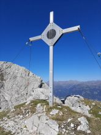
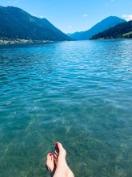
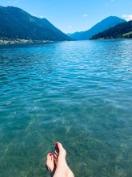

Willkommen!
Gemütliches Ferienhaus im Gitschtal – ideal für Familien & Naturfreunde
Das Haus
Willkommen in unserem charmanten Ferienhaus im idyllischen Weißbriach, mitten im schönen Gitschtal in Kärnten!Das Haus liegt in einer beliebten Urlaubsregion – perfekt für Familien, Paare und alle, die Natur, Erholung oder sportliche Aktivitäten suchen.
Der nahegelegene Weißensee, das Skigebiet im Ort sowie das nur 20 Minuten entfernte Skigebiet Nassfeld bieten das ganze Jahr über abwechslungsreiche Freizeitmöglichkeiten.
Das Haus bietet Platz für bis zu 8 Personen und ist ideal für Familien oder kleinere Gruppen.
3 Schlafzimmer:
1 Doppelzimmer, 2 Dreibettzimmer (jeweils mit einem Doppel- und einem Einzelbett)
Hinweis: Zwei der Doppelbetten sind nur 190 cm lang – also nicht ideal für sehr groß gewachsene Gäste
Jedes Zimmer verfügt über ein eigenes Waschbecken
Das Haus verfügt über 1 Badezimmer mit geräumiger Dusche sowie 2 separate WCs
Waschmaschine ist vorhanden
Voll ausgestattete Küche mit Elektroherd und zusätzlichem Holzofen für gemütliche Wintertage
Wohnzimmer mit TV-Anschluss
Fernwärme-Heizung sorgt für angenehme Temperaturen im ganzen Haus
Große Terrasse und gepflegter 1000 qm großer Garten mit Feuerschale für laue Sommerabende
Kostenloses WLAN und Parkplätze direkt am Haus
Die Umgebung hat viel zu bieten:
Im Sommer laden Wanderwege, MTB Routen und das örtliche Schwimmbad zur Bewegung in der Natur ein.Im Winter sind das familienfreundliche Skigebiet Weißbriachdirekt im Ort sowie das große Skigebiet Nassfeld schnell erreichbar.
Im Ort gibt es einen Supermarkt, einen Bäcker, mehrere Gasthäuser sowie eine Pizzeria – alles fußläufig erreichbar.
Wichtig zu wissen:
Haustiere sind leider nicht erlaubtRauchen ist nur im Außenbereich gestattet
Das Haus ist für Familien und ruhesuchende Gäste bestens geeignet
Unser Ferienhaus ist der perfekte Ausgangspunkt für einen entspannten oder aktiven Urlaub – zu jeder Jahreszeit. Wir freuen uns auf eure Anfrage!
Preise
- Mai–September: €95/Nacht
- Oktober–April: €80/Nacht
- Endreinigung: €40
- Mindestaufenthalt: 3 Nächte
Galerie - Sommer
Das Dorf


Das Haus

Die Umgebung
Die Möslalm, gemütliche Einkehr, Gehzeit ca. 1h - 1.5h, MTB ca 45 min


Die Napalalm, Herrlicher Blick übers Gitschtal, nicht bewirtschaftet, Gehzeit ca. 2h - 2.5h, MTB ca 1.5h - 2h
Näheste Gipfel: Sattelnock und kleiner Reisskofel
Das Nassfeld - Im Sommer ein Paradies zum Wandern
Der Weissensee - Karibik der Alpen und wunderschöne MTB- bzw. Wandermöglichkeiten


 

Galerie - Winter
Das Haus


Die Umgebung
Schigebiet im Dorf und Langlaufloipe

Die Napalalm - ein ungestörter Ort im Winter


Das Nassfeld, großes Schigebiet, 20 Autominuten entfernt, oder per gratis Schibus zu erreichen


Der Weissensee, Eislaufeldorado im Winter


Buchungskalender
Hier könnte dein Buchungskalender eingebunden werden (z. B. von Calendly oder einem WordPress-Plugin).